Redesigning trust: the jobs.ch and jobup.ch brand refresh
Role: UX Project Lead for a team of 4 designers.
Scope: 2 web platforms, native app, emails, blogs, SEO assets...
Duration: Approximately 12 months, from January 2025 through go-live in February 2026.
Platforms: jobs.ch and jobup.ch.
Impact
- Grew user-perceived differentiation to 72% saying the new design stands out from other job platforms.
- Impacted 6M+ monthly visitors across both platforms with 0% drop in traffic at launch.
- Unified 40+ components and 15+ foundations across jobs.ch and jobup.ch into one shared design system, removing years of duplicated design and engineering work.
- Hit 90% of pages and components complete within two focused sprints, after escalating a scheduling risk to leadership.
Why a brand refresh
jobs.ch started to feel dated next to newer, sharper competitors, and so had jobup.ch. The refresh was our chance to give both a more dynamic, future-ready look, without losing what already worked: jobs.ch serves all of Switzerland, jobup.ch is built specifically for Romandie, and that regional identity was worth keeping.
What was not worth keeping was how much the two platforms had quietly diverged underneath it. Different type scales, color systems, illustration styles, and pictograms had been built at different times on different foundations. Every difference was a maintenance cost paid twice, once by design and once by engineering.
The refresh let us fix both problems at once: one shared foundation for typography, imagery, illustration, and the color system's structure, with primary color left as the one deliberate point of difference between the two products.
{kind=link}
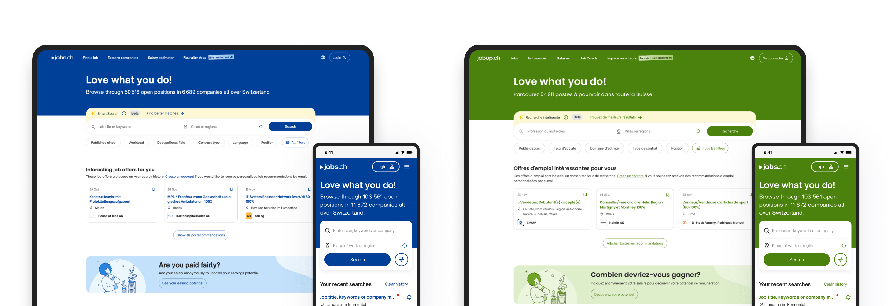
jobs.ch and jobup.ch before the brand refresh.
Brand concept
I worked closely with our internal brand team and the agency throughout the concept phase, joining regular check-ins and testing each direction against the realities of a live product.
After months of work, the agency delivered a full concept: new logos for jobs.ch and jobup.ch, a new main color for each platform, raspberry for jobs and apple for jobup, a shared color system built from those two, a graphical element called the life path, a bold new headline typeface called National 2, and a new illustration and pictogram set.
Some of it worked right away. Some of it did not survive contact with a real product. Raspberry and apple looked strong at brand scale, in large type, hero banners, and marketing. At normal text sizes, neither worked as a surface color, so we kept both as life path colors and big brand moments and used the secondary palette for surfaces. We also ruled raspberry out for destructive actions and error states, so jobs.ch's main color never quietly started meaning that something was wrong.
{kind=link}
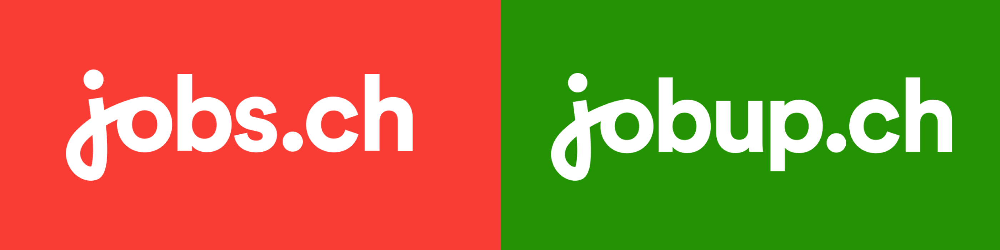
Brand concept for jobs.ch and jobup.ch.
{kind=link}
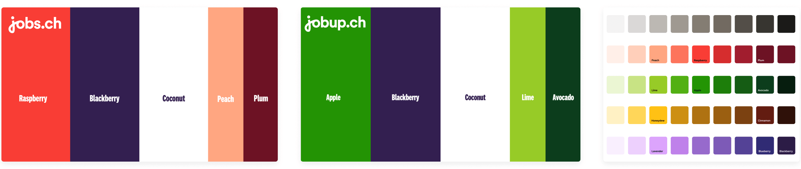
Shared color system for jobs.ch and jobup.ch.
{kind=link}
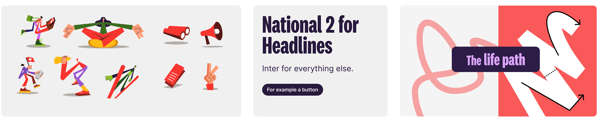
The life path graphic from the jobs.ch and jobup.ch brand concept.
Before and after
Same job, same information, one shared visual language instead of two. Buttons, type, pictograms, illustration, imagery, and layout logic are now identical across both platforms. Only the color tells you which product you are on.
{kind=link}
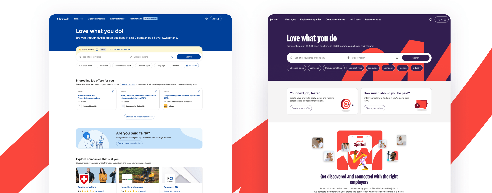
jobs.ch before and after the brand refresh.
{kind=link}
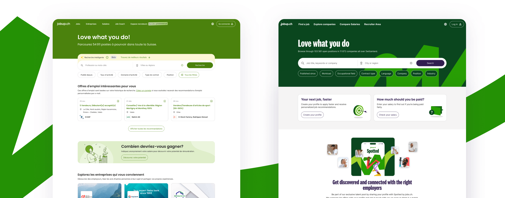
jobup.ch before and after the brand refresh.
{kind=link}
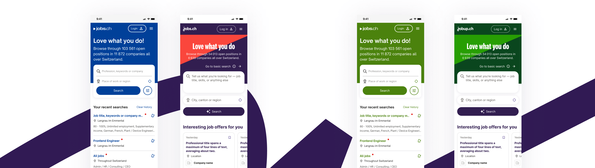
Mobile experience before and after the brand refresh.
How we got there
From there, it was on UX to turn the concept into something real, working closely with the brand lead and engineering across jobs.ch, jobup.ch, the native app, email, and every content surface.
1. Visual language: start with one page, not the whole system
We started with the homepage, not the whole system. One other designer and I prototyped it, testing multiple directions together with the brand lead and the agency.
{kind=link}
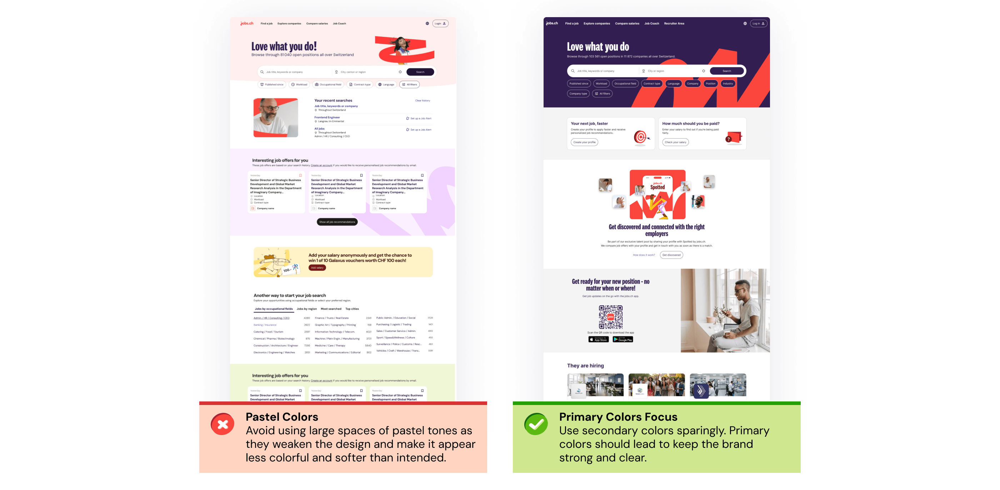
Homepage visual language explorations for jobs.ch and jobup.ch.
Pastel lost: it read as soft and diluted the brand instead of expressing it. Bold won, and that set the rule for every page: primary colors in hero areas, the life path motif big and unmissable, and secondary colors saved for further down.
For the header specifically, we paired blackberry with raspberry on jobs.ch and avocado with apple on jobup.ch, so people know which platform they are on before they have read a word.
2. Bringing the design team onto one shared foundation
Once the direction was set, I brought the whole design team together for a week to rebuild the design system's core. The week in Belgrade was not about moving fast. It was about getting the whole team aligned on the rules defined during exploration and making sure everyone built with them the same way.
We focused on the core components and turned loose color decisions into proper design tokens with semantic names, such as background/danger and content/danger, instead of raw values like red-50 or red-60.
{kind=link}
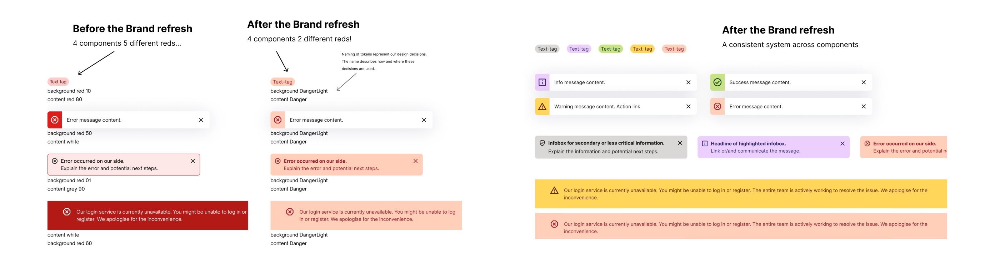
Components before and after the brand refresh.
Before, four components meant to communicate danger, tags, snackbars, banners, and infoboxes, used five different reds between them. Now all four use the same two: one for the surface and one for the text. The same logic holds across every color in the palette, not just red.
Buttons got the same fix: one shared color, blackberry, replacing blue on jobs.ch and green on jobup.ch, so both platforms finally read as one system.
3. Testing before we scaled it
Before we scaled the direction, it was important to test it. We wanted to see if it worked for the people using it, not just internally. With the amazing UXR team, we ran a survey across both language regions and three age bands.
72% said the new design stood out from other job platforms. It was also associated with modern, clear, appealing, and trustworthy, which matched what the brand was going for. Every segment rated it a good fit for a job board.
That gave us the green light to roll it out to the rest of the platforms including mobile, the native app, emails, blogs and other assets.
{kind=link}
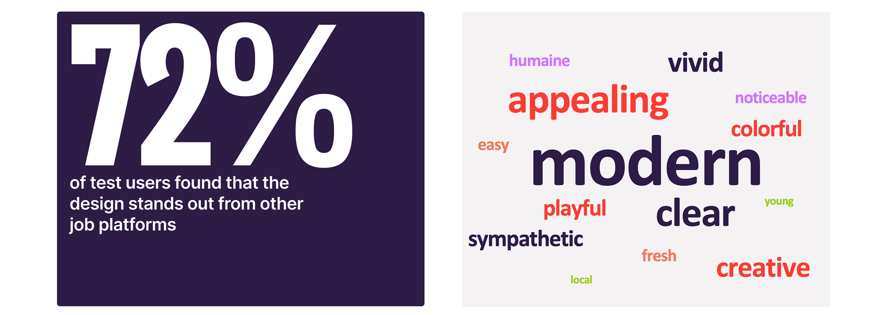
Testing results for the jobs.ch and jobup.ch brand refresh.
4. The deadline the team was not going to hit
A few months in, designers were splitting their time between regular scrum work and the brand refresh, and switching context between the two was costing the team real focus. I took the risk to leadership and made the case for two dedicated sprints where designers could focus entirely on the refresh.
I came with a clear goal: 90% of pages and components done by the end of the sprints.
To track progress, I did not want to use Jira. I noticed that designers were not keeping it current, so I had lost visibility into progress. Instead, I built a lighter system in Figma: one board with every page and component that needed work, and each designer's avatar. Designers grabbed what they wanted to work on and dropped their avatar on it, moving it across "in progress" and "done" as they went.
{kind=link}
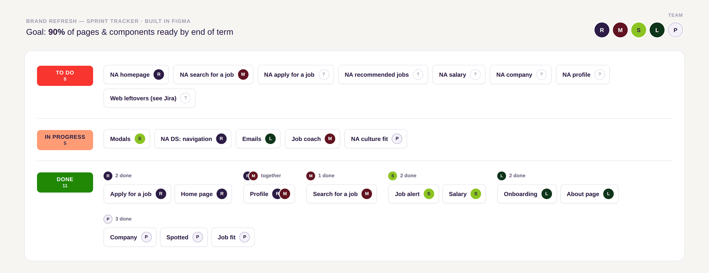
Everyone could see their own pile of 'done' grow, and who needed help.
It turned the backlog into something closer to a shared scoreboard. You could see your own pile of "done" grow and see at a glance who needed help. That self-selection and visible accumulation kept the pace up without anyone chasing status updates.
With the dedicated UX sprints, we hit the 90% target for pages and components. The remaining work was also completed before the go-live date.
From 90% target to go-live
The remaining work was completed before the go-live date, with frontend engineering and UX working hand in hand to resolve edge cases and support the rollout.
Because engineering had been involved throughout the project, implementation went smoothly and everything was ready for the go-live in February 2026. There was some concern that the refresh might lead to reduced traffic, but that did not happen.
The project was a major collaborative effort between the brand team and engineering, with UX acting as the link between the two. My role was to translate the brand direction into real product experiences, align decisions across teams, and help make the system work consistently across web, native app, email, blog, and SEO.